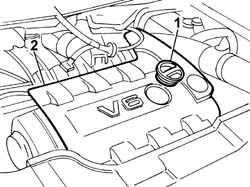

1016A42 LEFT HAND CYLINDER HEAD IGNITION COIL COVER - R+R
- Path
- Procedures > 10 ENGINE > 1016 CYLINDER HEAD/S > 1016A CAM COVERS > 1016A42 LEFT HAND CYLINDER HEAD IGNITION COIL COVER - R+R
- Kind
- repair procedure (removal / refitting; the operation number is the code)
- Applies to
- engines: 3.0 24V V6; all production periods
- Interactive page
- https://sloeber94.github.io/elrnDB-fUlss/en/#/179006871
Applies to: engines: 3.0 24V V6; all production periods
 Removing
Removing
 Refitting
Refitting1. Remove the oil filler cap.
2. Release the coil cover removing it from the press fastenings.

Applies to: engines: 3.0 24V V6; all production periods
Refitting
Removing- Fit the coil cover exerting moderate pressure to fit it correctly in the housings.
- Fit the oil filler plug.
Topics that link to this page (37)
- 1016A30 LEFT CAM COVER - R + R AND REPLACE GASKET
- 1016A34 RIGHT-HAND CAM COVER - R + R AND REPLACE GASKET
- 1020D14 FRONT CRANKSHAFT OIL SEAL COVER - R.R AND REPLACE SEALS FOR VERSIONS WITH OIL PUMP ON CRANKSHAFT, TIMING SIDE
- 1020D18 FRONT CRANK SHAFT COVER OIL SEAL - REPLACE
- 1032B46 TOOTHED DRIVE PULLEY - R + R
- 1032C18 MOBILE TIMING SYSTEM TENSIONER - R + R FOR 24 VALVE ENGINES
- 1032C31 FIXED TIMING TENSIONER - R R
- 1032D12 TIMING SYSTEM PROTECTIVE COVER(S) - R + R
- 1036C39 TIMING VARIATOR ON CYLINDER HEAD INTAKE CAMSHAFT - R R
- 1040B32 FUEL FILLER PIPE UNION SLEEVE - R + R
- 1056B62 L/H AND R/H FUEL PIPE ASSEMBLY - WITH INJECTORS - R + R
- 1056B66 L/H FUEL MANIFOLD PIPE, WITH INJECTORS - R + R
- 1056B67 R/H FUEL MANIFOLD PIPE, WITH INJECTORS - R + R
- 1056B70 INJECTOR (ONE) - R + R WITH FUEL MANIFOLD PIPE REMOVED - INCLUDES SEAL REPLACEMNT
- 1056B90 SYSTEM CABLE BUNDLE - R + R
- 1072B10 INLET MANIFOLD - R + R AND REPLACE SEAL
- 1072B50 SLEEVES CONNECTING AIR CAPACITY BOX TO INLET MANIFOLD IS - R+R
- 1072C40 L.H. EXHAUST MANIFOLD HEAT SHIELD ON BULKHEAD R + R
- 1080B38 LEFT CATALYTIC PRECONVERTER R R OR REPLACE CYLINDER HEAD GASKET
- 1080B39 RIGHT CATALYTIC PRECONVERTER R R OR REPLACE CYLINDER HEAD GASKET
- 1080B92 LEFT UPPER LAMBDA SENSOR R R
- 1080B93 RIGHT UPPER LAMBDA SENSOR R R
- 1080B96 LEFT REAR LAMBDA SENSOR ON CATALYTIC CONVERTER R R
- 1080B97 RIGHT REAR LAMBDA SENSOR ON CATALYTIC CONVERTER R R
- 1088D34 RIGID PIPE/CONNECTOR (ONE) FOR ENGINE COOLING CIRCUIT - R.R.
- 1088D32 <x>COOLANT MANIFOLD IN CYLINDER HEAD - R&R</x>
- 1088D53 RIGID SUPPLY OR RETURN PIPES FOR ENGINE OIL HEAT EXCHANGER - R.R.
- 1088C10 WATER PUMP - R + R
- 1088C30 THERMOSTAT UNIT - R+R
- 2130A38 AUTOMATIC TRANSMISSION FLUID HEAT EXCHANGER - R + R - INCLUDING LEVEL TOP UP IF NECESSARY
- 2130A40 COOLANT SUPPLY PIPE TO AUTOMATIC TRANSMISSION FLUID HEAT EXCHANGER - R.R.
- 2130A44 AUTOMATIC TRANSMISSION FLUID HEAT EXCHANGER COOLANT RETURN PIPE - R.R.
- 5510C16 LEFT HAND CYLINDER HEAD IGNITION COIL - R+R
- 5510C18 RIGHT HAND CYLINDER HEAD IGNITION COIL - R+R
- 5510C44 KNOCK SENSOR (ONE) - R+R
- 5510D10 SPARK PLUGS - R+R
- 5520B10 STARTER MOTOR - R+R